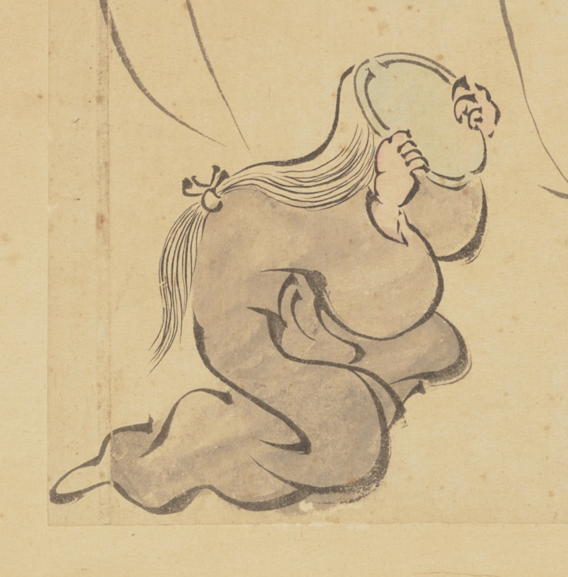

← 图鉴索引

頭部が鏡になっている妖怪。右側に描かれたお歯黒を塗る妖怪の鏡台役を務めている。
出典：親書誌：U426_nichibunken_0452：妖怪絵巻屏風／日付：2022／資源識別子：U426_nichibunken_0452_0001_0000
Copyright (c)2010- International Research Center for Japanese Studies, Kyoto, Japan. All rights reserved.